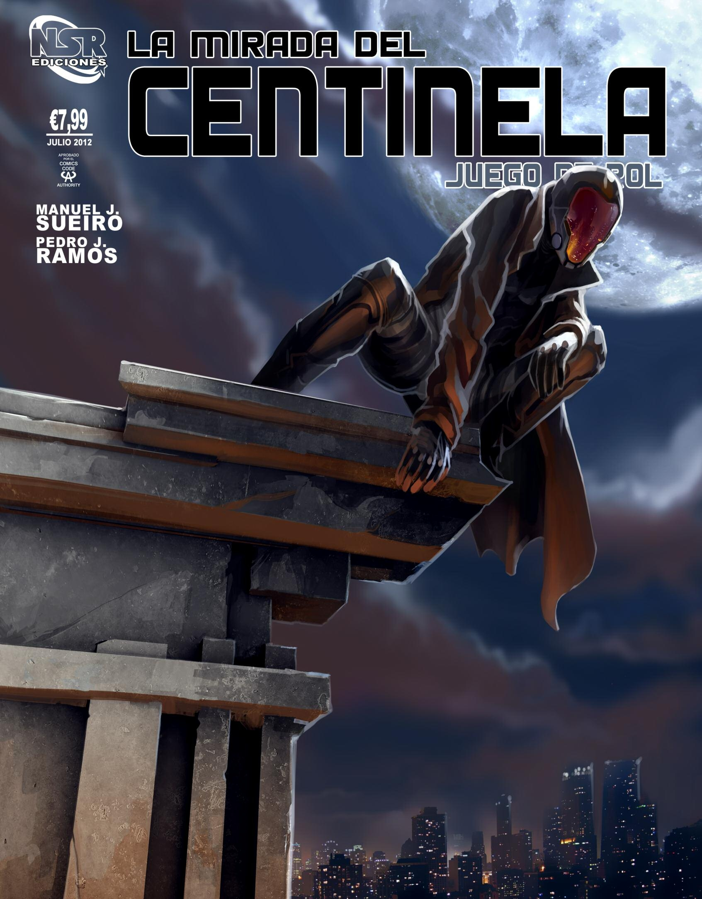

Guía de Archivos del Proyecto
Esta es la página principal de "La Mirada del Centinela". Aquí encontrarás una guía completa para navegar por todos los archivos y recursos del proyecto.
Bienvenidos a La Mirada del Centinela, un juego de rol ambientado en un mundo muy parecido al nuestro, donde el crimen y la corrupción plagan la ciudad de Betlam. Aquí, no existen los superpoderes, pero un equipo de individuos excepcionales, conocido como el Centinela, se dedica a luchar contra la injusticia y proteger a los inocentes.
Vuestros personajes son parte fundamental de esta organización, ya sea vistiendo el traje del Centinela en las calles, proporcionando apoyo táctico desde la base, diseñando sofisticados dispositivos o atendiendo a los heridos.
¡Gracias por visitar! Espero que disfrutes de los contenidos y te animes a participar en la comunidad.
Créditos y Licencia
La Mirada del Centinela es propiedad de Nosolorol Ediciones.
Este material compilado y web desarrollada por Aura Plateada bajo licencia Creative Commons.
Para contacto y colaboraciones: silveraura2024@gmail.com